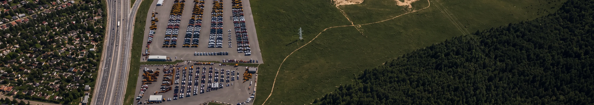

Политика в отношении обработки персональных данных
1. Общие положения
1.1. Настоящая Политика определяет порядок и условия обработки персональных данных Обществом с ограниченной ответственностью «Техсервис +», ИНН 5074067249, ОГРН 1205000112877 (далее — «Оператор»), при использовании информационно-рекламного сайта «Александровка Парк» и его страниц (далее — «Сайт»).
1.2. Сайт предназначен преимущественно для B2B-аудитории и содержит информацию о логистическом парке, размещении и хранении транспортных средств и техники, инфраструктуре, приемке, осмотре, фотофиксации, демонстрации, выдаче и иных сопутствующих операциях, а также позволяет направить заявку или запросить обратный звонок.
1.3. Сайт не является личным кабинетом или программной платформой, не предусматривает регистрацию пользователей, онлайн-оплату или заключение договора на оказание услуг непосредственно посредством интерфейса Сайта.
1.4. Политика разработана в соответствии с Федеральным законом от 27.07.2006 № 152-ФЗ «О персональных данных» и иными применимыми нормативными правовыми актами Российской Федерации.
1.5. Политика является информационным документом и не заменяет отдельное согласие субъекта персональных данных в случаях, когда согласие используется Оператором как правовое основание обработки.
2. Сведения об Операторе
Оператор
Общество с ограниченной ответственностью «Техсервис +»
ИНН / ОГРН
5074067249 / 1205000112877
Адрес
Московская область, г.о. Подольск, автодорога М2 Крым 30 км, вл. 1, стр. 1, офис 2
E-mail по вопросам персональных данных
Телефон
3. Категории субъектов и состав обрабатываемых данных
3.1. Оператор может обрабатывать персональные данные посетителей Сайта, лиц, направляющих заявки и обращения, а также представителей потенциальных и действующих клиентов, контрагентов и партнеров.
3.2. Через формы Сайта могут обрабатываться: имя, номер телефона, адрес электронной почты, наименование организации и должность (если соответствующие сведения запрашиваются или указаны пользователем), текст обращения и иные сведения, добровольно сообщенные пользователем.
3.3. При посещении Сайта могут обрабатываться технические и сетевые данные: IP-адрес, cookie и иные идентификаторы браузера/устройства, сведения о браузере, устройстве и операционной системе, дата и время посещения, просмотренные страницы, клики и события, источник перехода, UTM-метки и иные параметры рекламной кампании, параметры сессии.
3.4. Оператор не запрашивает через формы Сайта специальные категории персональных данных, биометрические персональные данные, паспортные данные и сведения о платежных средствах.
4. Цели и правовые основания обработки
4.1. Данные, предоставленные через формы Сайта, обрабатываются для приема и обработки обращения, обратного звонка, подготовки и направления ответа или запрошенного коммерческого предложения, а также для переговоров о возможном сотрудничестве.
4.2. Технические данные обрабатываются в объеме, необходимом для функционирования и защиты Сайта, диагностики ошибок и обеспечения информационной безопасности.
4.3. Данные, получаемые посредством аналитических и рекламных технологий, обрабатываются для анализа посещаемости, поведения на Сайте, источников трафика, достижения целей и эффективности рекламных кампаний, включая кампании в Яндекс Директе, Рекламной сети Яндекса и продвижение через Яндекс Бизнес, в том числе в Яндекс Картах и Яндекс Навигаторе.
4.4. Правовыми основаниями обработки являются согласие субъекта персональных данных и иные основания, предусмотренные статьей 6 Федерального закона № 152-ФЗ, применимые к конкретной цели обработки.
5. Яндекс.Метрика, Вебвизор, Яндекс Директ и РСЯ
5.1. На Сайте используется Яндекс.Метрика, включая функцию «Вебвизор». Данные Метрики могут использоваться для оценки посещаемости, источников переходов, достижения целей и эффективности продвижения Сайта в Яндекс Директе, РСЯ и Яндекс Бизнесе, включая переходы из Яндекс Карт и Яндекс Навигатора.
5.2. Счетчик Яндекс.Метрики может собирать сведения о посещениях, активности пользователя, cookie, устройстве, операционной системе и иные технические сведения и автоматически передавать их ООО «ЯНДЕКС». В отношении персональных данных посетителей, обрабатываемых посредством Метрики, Оператор является оператором персональных данных, а ООО «ЯНДЕКС» — лицом, осуществляющим обработку по поручению Оператора в объеме, предусмотренном условиями сервиса.
5.3. Вебвизор может записывать сессии посещений и взаимодействия пользователя со страницами Сайта. Запись содержимого всех полей форм в Вебвизоре должна быть отключена. Поля, содержащие или потенциально способные содержать имя, телефон, e-mail, содержание обращения и иные персональные данные, не должны передаваться в записи Вебвизора.
5.4. Оператор не передает в Яндекс.Метрику имя, телефон, e-mail и иные прямо идентифицирующие сведения через URL, UTM-метки, параметры визитов, параметры посетителей, события или иные обычные настройки счетчика. UTM-метки Яндекс Бизнеса и иных рекламных кампаний используются только для определения источника и параметров рекламного перехода и не должны содержать персональные данные. Функции «Передача данных из CRM», «Advanced Matching» и иные специальные функции передачи клиентских данных не используются без отдельной предварительной оценки правового основания и актуализации документов.
5.5. Необязательные аналитические и рекламные технологии запускаются в соответствии с выбором пользователя в интерфейсе управления cookie. Дополнительная информация содержится в Политике использования файлов cookie.
5.6. Для продвижения организации может использоваться Яндекс Бизнес, включая продвижение карточки «Александровка Парк» в Яндекс Картах и Яндекс Навигаторе и рекламные инструменты Яндекс Бизнеса. Яндекс Бизнес может учитывать переходы и целевые действия, а также использовать UTM-метки и данные Яндекс.Метрики для оценки эффективности кампаний. Если в Яндекс Бизнесе будет включен подменный номер или иной дополнительный инструмент отслеживания обращений, до его включения Оператор проверяет необходимость актуализации настоящей Политики и связанных документов.
6. Иные сервисы и каналы связи
6.1. На Сайте могут размещаться Яндекс Карты, ссылки или кнопки перехода в мессенджеры (в том числе WhatsApp, Telegram, MAX) и кнопка телефонного звонка. При переходе на внешний сервис дальнейшая обработка данных осуществляется также соответствующим владельцем внешнего сервиса по его правилам.
6.2. Для приема телефонных обращений используется корпоративная телефония MANGO OFFICE (ООО «Манго Телеком»). При телефонном обращении могут обрабатываться номер телефона звонящего, дата и время звонка и иные технические сведения, необходимые для установления и учета телефонного соединения. На дату настоящей редакции на Сайте используется один постоянный номер; динамический calltracking не используется, запись телефонных разговоров, их расшифровка и речевая аналитика не осуществляются. MANGO OFFICE не используется на Сайте как средство веб-аналитики или отслеживания поведения посетителей.
6.3. На дату настоящей редакции заявки с Сайта направляются на корпоративную электронную почту Оператора. При последующем подключении CRM, включая Битрикс24, calltracking, дополнительных рекламных пикселей или иных сервисов Оператор до их запуска оценивает необходимость изменения настоящей Политики, Cookie Policy, согласий и технической схемы обработки.
7.1. Оператор может осуществлять сбор, запись, систематизацию, накопление, хранение, уточнение, извлечение, использование, предоставление доступа уполномоченным лицам, блокирование, удаление и уничтожение персональных данных с использованием средств автоматизации и без них.
7.2. Оператор принимает необходимые правовые, организационные и технические меры для защиты персональных данных от неправомерного или случайного доступа и иных неправомерных действий.
7.3. Доступ к обращениям предоставляется только работникам и привлеченным лицам, которым он необходим для исполнения обязанностей. Обработка может поручаться поставщикам хостинга, корпоративной электронной почты, аналитики и иных используемых сервисов при соблюдении требований законодательства.
7.4. При сборе персональных данных граждан Российской Федерации через Сайт Оператор обеспечивает выполнение требований части 5 статьи 18 Федерального закона № 152-ФЗ о базах данных, находящихся на территории Российской Федерации, в применимом объеме.
8. Сроки обработки и уничтожение
8.1. Данные, полученные через формы, обрабатываются до достижения целей обработки или отзыва согласия, но не более 3 лет с даты последнего взаимодействия по соответствующему обращению, если более длительный срок не требуется на ином законном основании.
8.2. При достижении цели обработки или отзыве согласия Оператор прекращает обработку, осуществляемую на основании согласия, и при отсутствии иного законного основания обеспечивает уничтожение данных в сроки, установленные Федеральным законом № 152-ФЗ.
8.3. Сроки хранения cookie и технических данных зависят от назначения, технических настроек Сайта и соответствующих сервисов.
9. Права субъекта персональных данных
9.1. Субъект вправе получать сведения об обработке своих персональных данных, требовать их уточнения, блокирования или уничтожения в предусмотренных законом случаях, отозвать согласие, потребовать прекращения обработки, а также обжаловать действия Оператора в Роскомнадзор или в суд.
9.2. Обращения по вопросам персональных данных и отзывы согласия направляются на na@perimetr.space либо по адресу: Московская область, г.о. Подольск, автодорога М2 Крым 30 км, вл. 1, стр. 1, офис 2.
10. Заключительные положения
10.1. Актуальная редакция Политики размещается на Сайте и действует до ее замены новой редакцией.
10.2. При изменении функциональности Сайта, состава подключенных сервисов, целей или способов обработки Оператор оценивает необходимость актуализации настоящей Политики и связанных документов.
Cвязаться с нами
Стоимость рассчитывается индивидуально с учетом объема, категории имущества, срока хранения и состава услуг